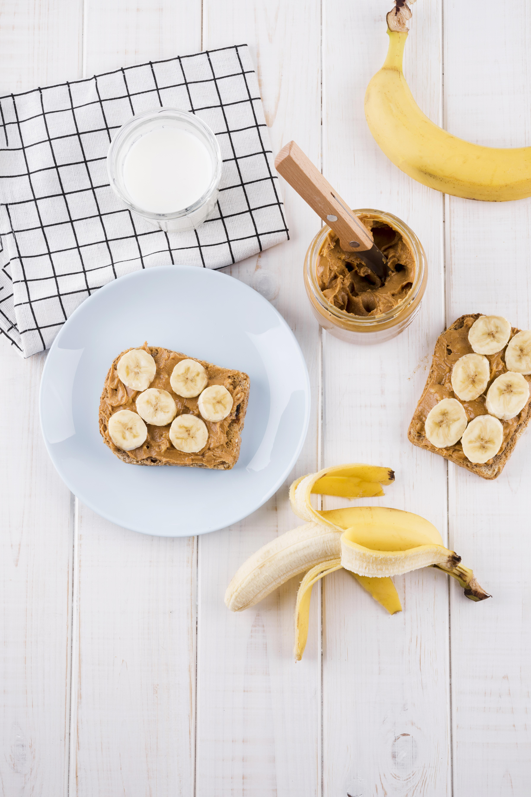

Easy Breakfast Ideas for Busy Mornings

No time for breakfast? These quick and energizing ideas take less than 10 minutes — perfect for busy remote workers.
1. Peanut Butter Banana Toast
Toast whole-grain bread, spread natural peanut butter, and top with banana slices. Add chia seeds for extra fiber and protein.
2. Yogurt Parfait
Layer Greek yogurt with berries and granola in a jar. You can prep these the night before for a grab-and-go option.

3. Egg Muffin Cups
Whisk eggs, pour into muffin tins, and add chopped veggies. Bake for 15 minutes. Store in the fridge and reheat throughout the week.
Tip: Keep your fridge stocked with go-to ingredients to make mornings even easier.